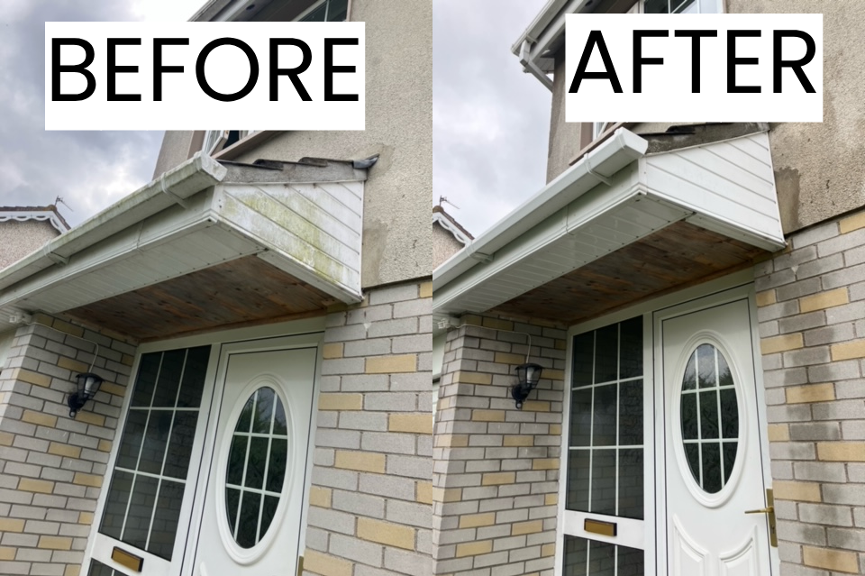
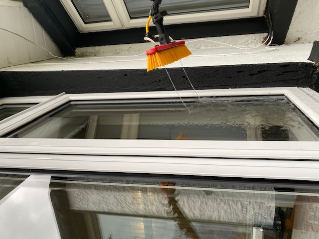
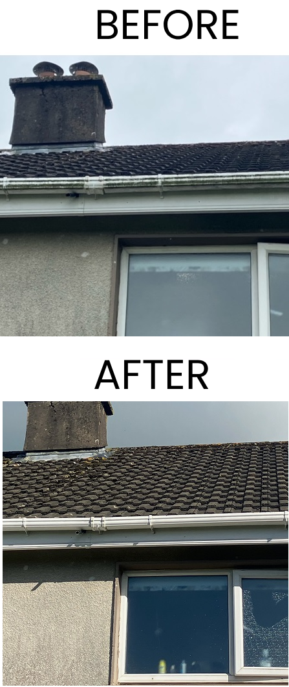
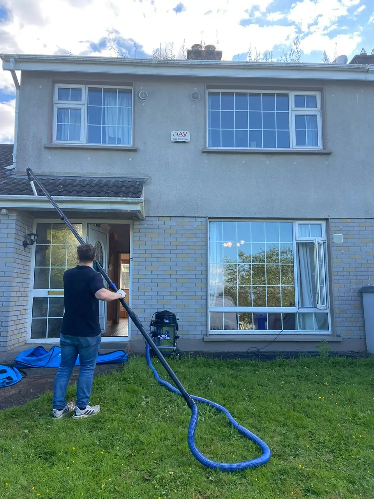
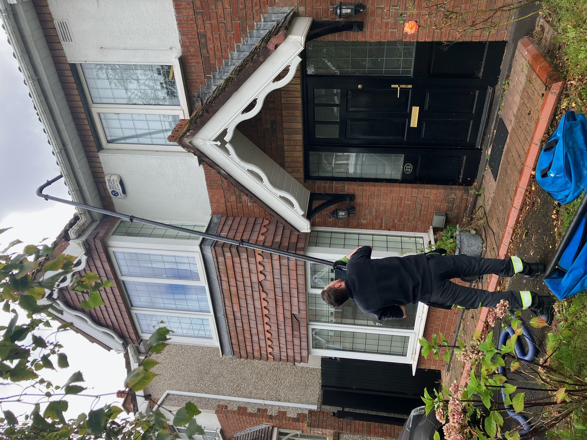
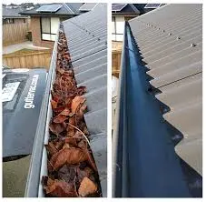

GUTTER CLEANING CORK
Exterior Cleaning Pros Covering Cork and LimerickWe are committed to the best quality in the field of residential and commercial cleaning. We offer Power washing, Window Cleaning, Gutter Cleaning and more!
MAKE A BOOKINGWe are committed to the best quality in the field of residential and commercial cleaning. We offer Power washing, Window Cleaning, Gutter Cleaning and more!
MAKE A BOOKINGAt Cleanway, we provide gutter cleaning in Limerick and Cork along with many other services serving both counties!
At Cleanway, we prioritize customer satisfaction and strive to make the entire experience as seamless and convenient as possible. We are very clear and transparent with our pricing and we use safe, high quality equipment to complete our work.
Cleanway's founder, Donal has worked with multiple home service businesses around Ireland helping them to establish online systems. He completed a BSc in Computer Systems in 2021 and is commited to providing excellent services for home owners. We intend to break the sterotype of the cleaner who is unreliable, late and unprofessional by providing professional standards to our process from start to finish.
Experience the difference of Cleanway's professional and friendly service, where cleanliness meets efficiency, and enjoy a hassle-free cleaning experience from start to finish.
Donal Owner
When you work with us, you'll know exactly what you're getting and how much it will cost from the very beginning with our clear transparent pricing.
You can pay securely and conveniently from anywhere, at any time, without having to worry about mailing checks or visiting our office in person.
We offer discounts for customers on our weekly and monthly cleaning cycles.

Our window cleaning service offers flexible scheduling options for our clients in Cork. Choose from 6-week or 12-week cleaning intervals which allow you to enjoy sparkling clean windows all year round.
Clients on the six week and twelve week rotations recieve discounts on window cleaning services. Keep your windows consistently clean and save with our discounted service plans. Experience the convenience and affordability of regular window cleaning with us.
BOOK NOWCheck our Booking Page for An Instant Quote
Check our Booking Page for An Instant Quote
Book Your Service
We provide a top class professional cleaning service
On time. Efficient. Professional. Would 100% recommend and call again. Thanks lads.
They got there on time and did an excellent job. Gutters are sorted!

Excellent service. Lads a pleasure to deal with. Would highly recommend.
Join 47+ happy homeowners
Get Your Free Quote

.png)






